Blog
Gli editoriali del mercoledì
Esce un editoriale a settimana, il mercoledì, dal 16 settembre 2026. Ogni volta prendiamo una cosa che in Italia funziona già e la scriviamo con i nomi, i luoghi e i numeri per andarla a verificare.
In fondo a ogni pezzo ci sono tre pratiche che un comune, una scuola o un'impresa possono copiare così come sono. Chi ne ha una da segnalarci scriva a info@ecodigital.it.
Il primo
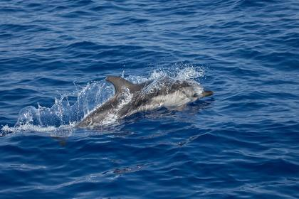
Mercoledì 16 settembre 2026 · con TheAtenaUn delfino per capire il mare
Il video della rete sulle Aree Marine Protette premiato a Venezia l'11 settembre, i catamarani che escono da Taranto per contare i cetacei e gli archivi aperti da oltre 15 anni.
Leggi l'editorialeTutti gli editoriali
Dal 16 settembre al 23 dicembre 2026, in ordine di uscita. Ogni pagina si apre anche senza connessione e non carica niente da server esterni.
Un delfino per capire il mare
Il video premiato a Venezia, i catamarani che da Taranto contano i cetacei e gli archivi aperti da oltre 15 anni.
con TheAtena 23 set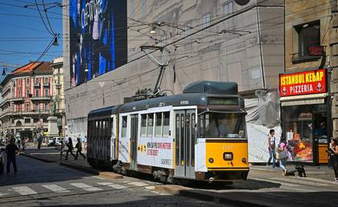
La città che ha misurato le sue strade
Bologna pubblica i numeri di Città 30, Pontevedra misura da 25 anni. Due metodi che un comune può copiare.
30 set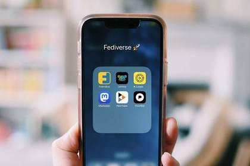
Chi pesa le pagine prima di pubblicarle
La Green Web Foundation si dà un tetto di peso, la Francia ha messo l'ecoprogettazione per iscritto nel 2024.
7 ott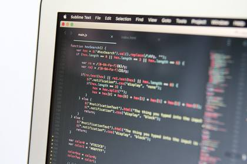
Perché abbiamo rifatto il sito: un manifesto in 40 KB
Niente font esterni, niente tracciatori, niente banner dei cookie. Il peso di ogni pagina è scritto in fondo.
14 ott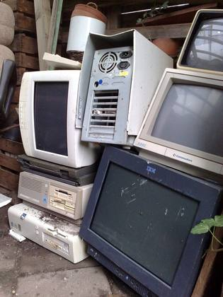
I riparatori che rimettono in vita i telefoni
62 milioni di tonnellate di rifiuti elettronici in un anno, i repair café italiani e l'etichetta europea di riparabilità.
21 ott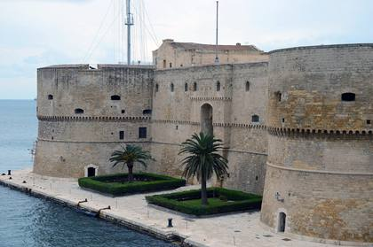
Taranto, la città che riparte dai suoi due mari
I citri del Mar Piccolo, il ponte girevole del 1887 e il centro Kētos dentro Palazzo Amati.
con TheAtena 28 ott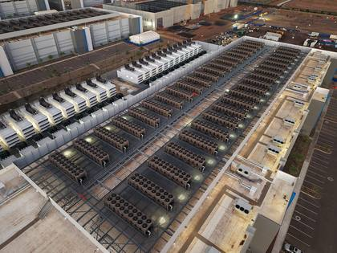
Il data center che riscalda cinquemila case
A Rozzano il calore dei server arriva in oltre 5.000 abitazioni, a Brescia entra nel teleriscaldamento cittadino.
4 nov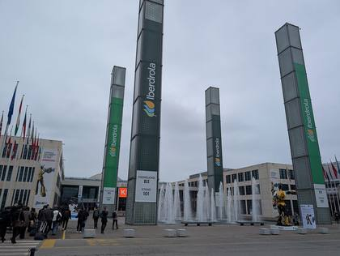
Cosa andiamo a cercare a Ecomondo
A Rimini, dal 3 al 6 novembre, cerchiamo le imprese che accanto alla parola «sostenibile» mettono un numero.
11 nov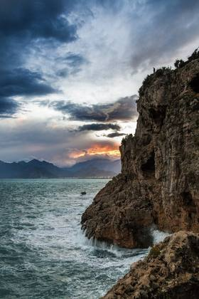
Da Antalya al tuo comune: cosa si può già fare
Mentre ad Antalya si negozia fino al 20 novembre, le cose che un comune o un'impresa possono fare da soli.
18 nov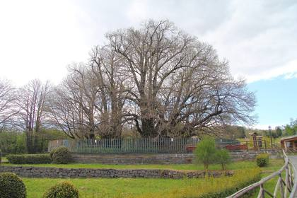
Gli alberi che hanno fatto l'Italia
La legge sul verde urbano del 2013, il Castagno dei Cento Cavalli, l'Olivastro di Luras e l'Italus del Pollino.
con TheAtena 25 nov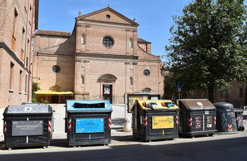
I 49 comuni che pagano i rifiuti a consumo
Nel Trevigiano la tariffa puntuale va avanti da anni e la raccolta differenziata sta sopra l'85 per cento.
2 dic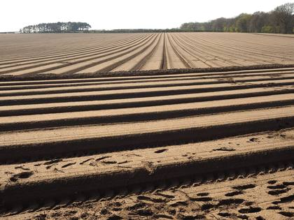
I comuni che restituiscono suolo alla città
In Italia si consumano più di due metri quadrati di suolo al secondo. Alcuni comuni hanno invertito il conto.
9 dic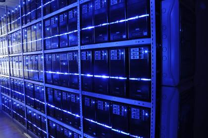
Le tre righe che rendono buona una gara sull'IA
Quanto consuma, su quali dati è addestrato, chi risponde se sbaglia: tre domande da mettere nel capitolato.
16 dic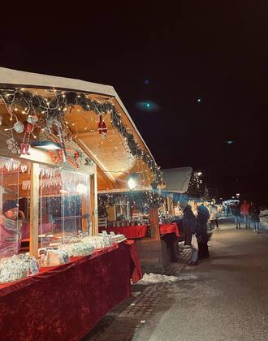
Natale ecodigital: regalare cose riparate, adottare invece di comprare
Un oggetto ricondizionato scelto con l'etichetta europea di riparabilità, oppure un'adozione da un rifugio.
con TheAtena 23 dic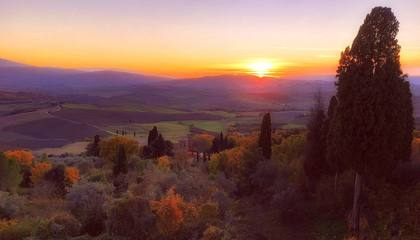
Il 2026 della rete, in numeri
Il primo bilancio dell'anno, con i numeri ancora da confermare segnati come tali.
I titoli sono pubblicati in anticipo: è il modo più semplice che conosciamo per prendere un impegno davanti a chi legge. Le date possono spostarsi di una settimana, i titoli no.